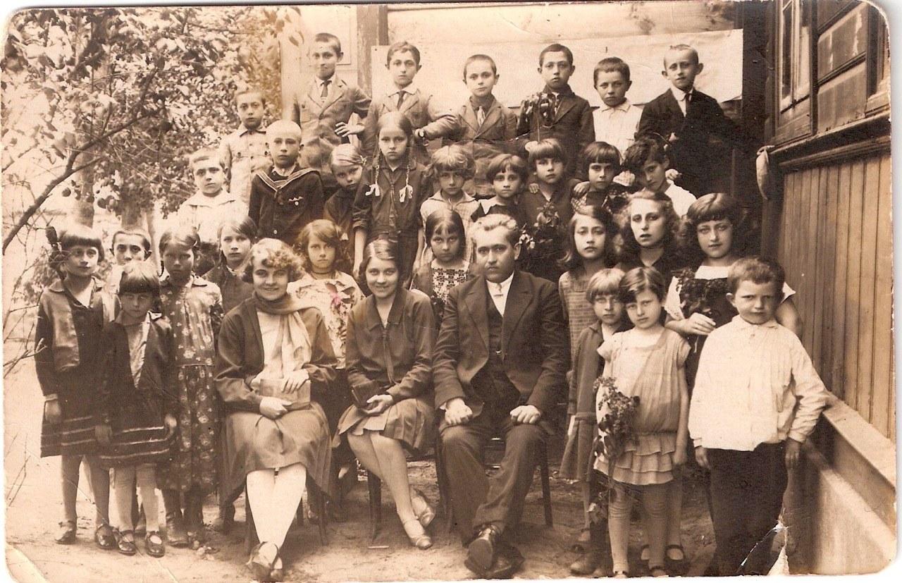
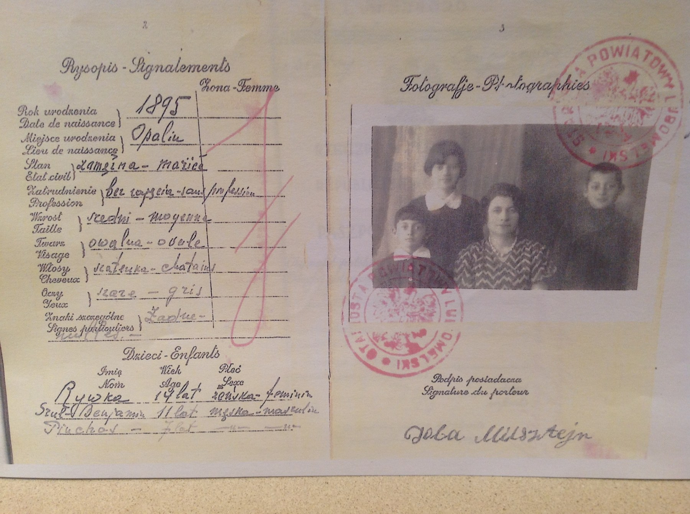
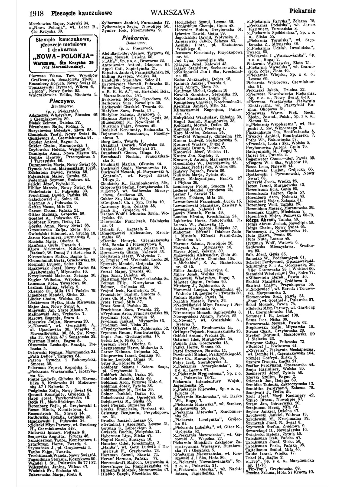

The stories that brought us here
Many branches.
One unfolding
family story.
An archive of the people, places and journeys that shaped our family—told through photographs, original documents and the voices of those who remembered.
Explore the Opalin branchHow to read this archive
Explore by branch
Every family line has
its own beginning.
This archive begins with the Milstein and Lederer families of Opalin. Other researched branches can share the people, places and source library.
Milstein & Lederer
Opalin · Warsaw · Johannesburg · Bulawayo · Israel
Documents, family voices and a working treeMore branches,
when their stories
are ready.
Future collections can share the same people, places and source library.
Start with a story
Before the journey
Life in Opalin
School photographs, a market square, the river and the remembered world of home.

Across Europe & the sea
The journey of 1934
A passport and passenger list trace Doba’s journey with three children.

A new home
Life in southern Africa
Moshe’s death, Doba’s resourcefulness, Arke and the later Slot household.

The maternal family
The Lederer connections
Hela, the Warsaw baker, three sisters and an aunt in Denver.

Across the Bug, then to Israel
The Alter connection
A memoir and a recorded family account connect the branches.

Those who remained
Opalin and the Holocaust
The killing-site research, individual testimonies and what remains unknown.
A family archive, with evidence
The document behind the story.
Follow a citation to the source, inspect a saved image, or hear the recording. Where memories and records disagree, the difference stays visible.
Browse the source library